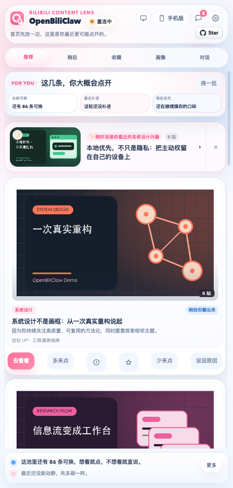
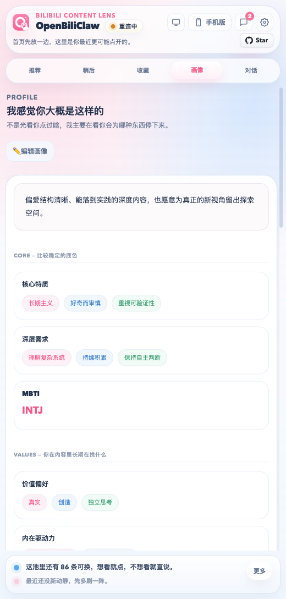
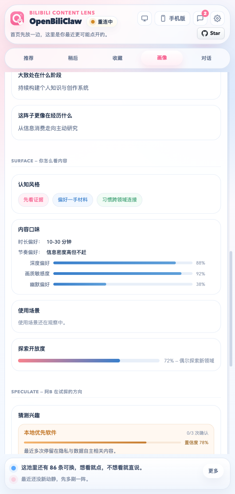
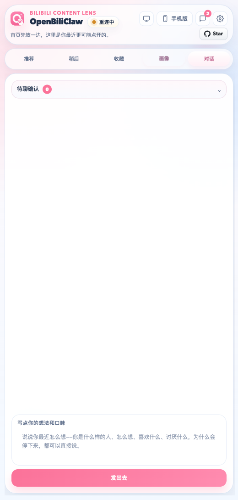

纯本地私有
推荐、观察、画像和对话状态保存在本机 SQLite；凭据通过本地 vault 的不透明引用隔离。只有你配置的外部模型服务会接收相应的有界请求。
Fully local · private · open source
OpenBiliClaw 从跨平台使用、项目内反馈与对话中持续深化心理画像， 让 Agent 带着越来越准确的用户理解，主动去 B 站、小红书、抖音、YouTube、X、知乎、Reddit、Linux.do、Bangumi 等来源寻找你会喜欢的内容。 让 Agent 带着越来越准确的用户理解，主动去 B 站、小红书、抖音、YouTube、X、知乎、Reddit、Bangumi、V2EX 等来源寻找你会喜欢的内容。

Start
Latest Release 的 openbiliclaw-v* 聚合页会同时列出当前后端源码、浏览器插件包和可用桌面安装包；桌面包如果落后，页面会标出对应 desktop-v*。先部署后端并使用 Web 界面；需要通用配方取材时再安装可选扩展。
请按照 https://raw.githubusercontent.com/whiteguo233/OpenBiliClaw/main/docs/agent-install.md 的说明帮我部署 OpenBiliClaw 后端(务必用 Bash 的 curl 下载这个文档,不要用 WebFetch — 会丢关键指令)curl -fsSL https://raw.githubusercontent.com/whiteguo233/OpenBiliClaw/main/scripts/install.sh | bashcurl -fsSLO https://raw.githubusercontent.com/whiteguo233/OpenBiliClaw/main/docker-compose.prebuilt.yml
docker compose -f docker-compose.prebuilt.yml up -d
# 然后打开 http://127.0.0.1:8420/ 使用 Web 界面macOS Apple 芯片下载 OpenBiliClaw-macos-v*-arm64.dmg，Intel 下载 x64 包（如发布页提供）；DMG 内推荐双击「安装并启动 Install OpenBiliClaw.command」，它会校验新包、退出旧实例、原子替换并启动刚安装的版本。Windows 下载 OpenBiliClaw-windows-*-Setup.exe，安装或升级成功后同样会结束旧实例并自动启动新版本。可用安装包都附在 openbiliclaw-v* 聚合 Latest Release 里。当前为 ad-hoc signed、未公证的实验性预发布：Mac 首次打开安装助手或应用时请右键 / Control-click → 打开，或到系统设置 → 隐私与安全性点仍要打开；若提示“已损坏”，确认来源后执行 xattr -dr com.apple.quarantine /Applications/OpenBiliClaw.app。
主要产品界面是响应式 Web。插件保存本机后端 URL 与不透明扩展令牌，并在用户批准来源域名后按后端配方读取指定 Cookie/站点存储值，只回传到本机后端；它不采集浏览行为，也不执行来源业务任务。最新版可从 openbiliclaw-v* 聚合页下载，Firefox 使用 -firefox.zip。
移动设备请直接访问已配置的 OpenBiliClaw Web 地址。
Why it matters
平台推荐通常先有内容池，再预测你会点什么。OpenBiliClaw 先沉淀对你的理解，再让 Agent 带着这份理解跨平台主动寻找。
推荐、观察、画像和对话状态保存在本机 SQLite；凭据通过本地 vault 的不透明引用隔离。只有你配置的外部模型服务会接收相应的有界请求。
显式反馈、聊天校准、有限的已连接来源证据和导入记录都走同一 Observation 边界，让理解可追溯地更新。
Discovery 把有界用户理解翻译成搜索、已声明 Feed 和相邻语义召回，在约束与预算内维护候选池。
每条推荐都带朋友式解释。你可以喜欢、不喜欢、补一句原因，反馈会继续影响后续发现和排序。
Learning Loop
OpenBiliClaw 只从显式反馈、聊天校准和用户选择的有限来源证据更新理解；凭据、原始网页和任意浏览行为不会进入模型画像。
推荐反馈、显式偏好、已确认画像修订、已连接的 B 站 History/Saved 与 YouTube Takeout 观看记录进入同一证据入口。
不可变、幂等的类型化观察先经过来源、信任、大小与安全校验，再提交到本地 SQLite。
显式陈述始终高于推断；主张保留证据、信任、置信度和生命周期，不采用固定人格分类。
搜索、声明的 Feed 和相邻语义召回经过预过滤、评估、可重放分配与多样性约束后进入候选队列。
反馈必须匹配服务端交付记录；新证据再走同一入口，重复请求不会重复学习。
Sources
OpenBiliClaw 用统一候选池和来源配比把多个内容来源接进同一套理解、发现和推荐流程。
匿名搜索、详情、关联、创作者与 popular Feed 可用；验证后的 Cookie 还可启用 rcmd、History、Saved 与保存动作。
通过 yt-dlp 提供匿名搜索、详情和创作者读取；Takeout 仅导入观看历史，订阅与点赞不会伪装成收藏。
官方 API 提供匿名条目搜索、rank/date Feed 与详情；当前生产路径不启用 PAT 私有收藏。
官方 API 提供匿名 hot/latest Feed、主题详情和成员主题；没有官方全文搜索，因此不声明 Search。
官方 Firebase API 提供匿名 top Feed 与条目详情；没有官方全文搜索，因此不声明 Search。
匿名 visitor 流程提供公开搜索与投影；详情接口受登录限制，因此不声明 Fetch。
Discourse JSON 搜索与详情已接入；Cloudflare 可能拒绝非浏览器客户端，失败时返回类型化不可用。
Search/Fetch/Projection 合同已注册，但生产验证器与 HTTP transport 尚不可用，实时调用安全失败。
Search/Fetch/Projection 合同已注册，但生产验证器与 HTTP transport 尚不可用，实时调用安全失败。
Search/Fetch/Projection 合同已注册，但生产验证器与 HTTP transport 尚不可用，实时调用安全失败。
保留严格原生 schema 与用途投影；manifest 仅声明 Projection，当前没有生产读取 transport。
保留严格 aweme schema 与用途投影；manifest 仅声明 Projection，当前没有生产读取 transport。
Product
Web 提供推荐、来源、搜索、画像、Assistant、设置与运行状态；扩展只负责连接本机后端和用户触发的通用配方取材。
换一批、继续看、喜欢、不感兴趣、写一句原因，反馈会回到学习闭环。

它会把“你在内容里长期寻找什么”沉淀成价值偏好、内在驱动力和兴趣方向。

画像不是一段玄学文字，而是能被查看、质疑和校准的结构化偏好。

有些偏好不必靠猜。直接告诉它你想看什么、避开什么、为什么没打中。
Architecture
没有云端账号体系，也不是又一个内容平台。它是一套跑在你电脑上的个人推荐系统。
连接用户配置的本机后端；只有在用户批准来源域名后，才按后端声明的配方读取指定 Cookie/站点存储并回传本机。它不采集浏览行为，也不执行来源业务任务。
默认绑定 127.0.0.1，通过严格 `/v1` schema 把 Web、扩展和 CLI 路由到唯一 Application workflow owner。
Observation 是事实入口，Understanding 维护有证据的主张，Recommendation 在确定性边界内发现、评估和选择。
观察、画像、候选池、策略日志与推荐历史留在本机 SQLite；凭据隔离在 vault，版本化归档支持备份和迁移。
Open source · built by one developer
OpenBiliClaw 是一个开源、个人维护的项目，没有公司、没有融资。你的一颗 ⭐ 是对它最直接的鼓励，也能让更多想夺回推荐主权的人发现它。